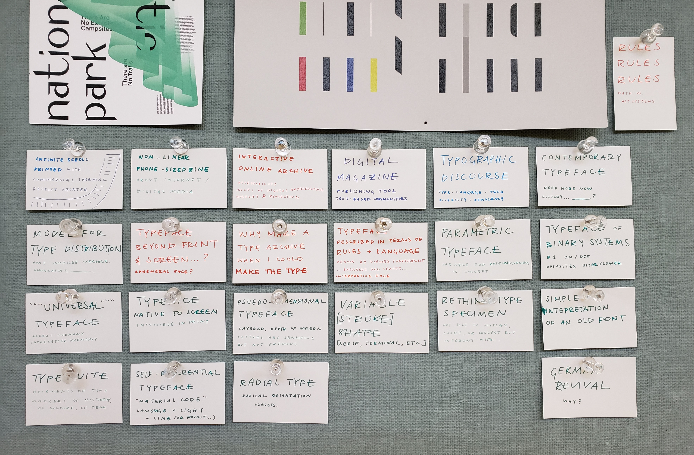
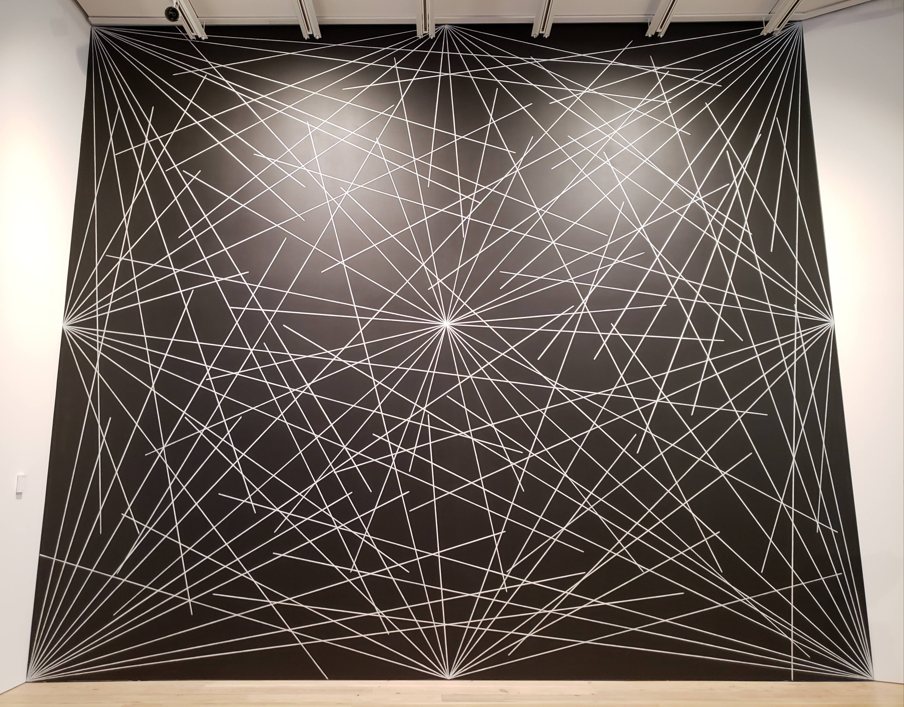
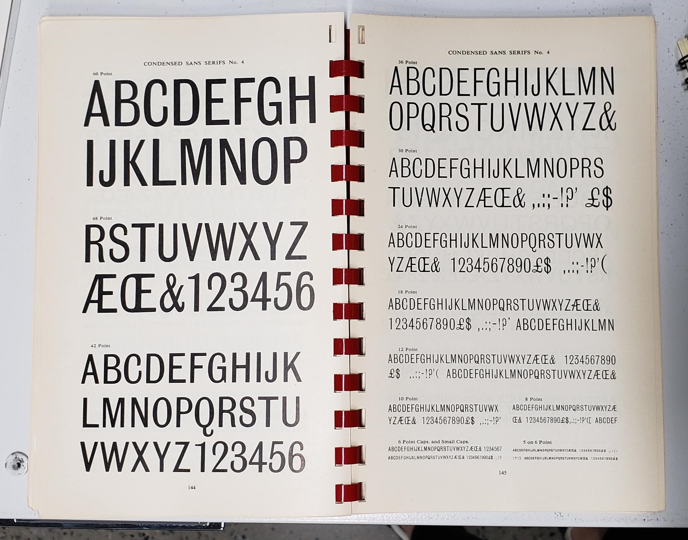

weeks 7 & 8October 4–18

For a while I was thinking of making a non-linear phone-sized zine in conjunction with a printed infinite scroll for my capstone. It’s more of an art piece than a design piece. But after the capstone meeting I kind of thought I wouldn’t really want to spend an entire semester on that, and it’s more of a project I would do on the side… I need to just make it. What I’m trying to say with that idea will emerge more once I make it. I also haven’t really done much with alternative tools (like a commercial receipt printer) besides small Arduino things and I’m more interested in creating a digitally native project than a print one.
I’m still interested in the form and structure of digital media, but I really ache to do something directly with letterform. I think I’m being timid by not making a typeface. Because really that’s what I want to do. So I am probably going to do that. Type is all about rules and parameters. That’s what makes it manageable to make. And what makes it fun. The other exciting thing is that type reflects culture and technology. Its form is influenced by how it’s made. Part of that includes the maker’s tendencies. This all sounds pretty obvious. But basically I’ve been making things with rules and shapes and language since forever. It’s why I was originally a math major. But making rules is way more satisfying than working within predetermined ones. So making a typeface makes a whole lot of sense.
I’ve been thinking a lot about systems. So I think a parametric typeface would be really interesting, a system of binary switches. It wouldn’t be anything groundbreaking or completely new, but that’s kind of what a typeface is. For now it will always be based on the alphabet.
I’ve worked in systematic ways of making type before in terms of modular strokes (stencils) and modular counter shapes on the same starting proportion of a square. My CSS typeface was about applying a strict and simple set of rules on the slab serif form. And this past summer I got some experience with the actual font-making side (though there’s still lots to learn, as always). There are many rules I can set to make making a typeface totally manageable, like doing a monospace so that I don’t have to spend time kerning or creating a proportionally modular system.
I guess I’m thinking of making type as a program (a phrase I’ve seen before; need to reread this article). Can I sever it from its analog roots? Probably not but I want to make a type that can really only exist on the screen. Digitally native. It also needs to be contemporary in some way. In conversation with the now. So I’m not really interested in doing a revival; that’s more of an exercise. Undoubtedly my typeface will need to be informed by precedents though.
I just really need to make a typeface.

— prototype site
I made another CSS typeface, though there’s not really much attention paid to interaction (though that’s not really the point of this). I want to figure out how this thing can actually be typed in its animated form. I don’t think it’s possible with current font technology; it’d be more of a browser hack. Right now it’s just key presses changing opacity.
— CodeProfiles by W. Bradford Paley
“CodeProfiles looks at the computer program as text and visually comments on how code is read by people… the amber line follows the fixation point, tracing how people might read the text, line by line; the white line follows the insertion point and flows like the programmer’s thoughts, calmly in one place then jumping around to make other parts of the code perform; and the green line moves along the execution point of the program, creating wide swaths where the code was executed thousands of times and appearing as a thin thread where the processor rarely visited.” (from exhibition tag)
“Paley thereby foregrounds the conceptual nature of all digital art, which is always driven by a language formulating instructions.”
The Whitney museum in New York had an exhibition called Programmed: Rules, Codes, and Choreographies in Art. It made light of a lot of themes of why I make what I make and why we’re doing what we’re doing in the interaction capstone.

— 4th wall from Wall Drawing #289 by Sol LeWitt
This Sol LeWitt mural coincidentally looks a lot like one of the scroll charette things I made. Which isn’t that crazy; it’s just lines and rules and language. What everything is. But how the two are made changes its outcome. A browser vs. crayon and a wall. Reproducibility and multiplicity is a thing to think about with these rule based works. It coincides with the thought that letters are sensitive but not precious.
I guess I’m wondering how redundant it is to keep making stuff that’s based on these ideas. What about rules and programs? It’s the starting point.
— remote from Lorna by Lynn Hershman Leeson, an early example of non-linear interactive work


— Abstract Browsing 17 03 05 (Google), 2017 by Rafaël Rozendaal. Weaving output from rapier loom machine.
Rectangles. Browsing + plug-in → tapestry.
— Reconstruction 7 by Jim Campbell, LED lights and cast-resin screen
Reducing the digital screen to its material: light and an overlaying screen.

— Bauer Beton

— Stephenson & Blake

— Berthold Standard
The Herb Lubalin Study Center is heaven except for the fact that your stay is limited to 2 hours instead of infinity.
It would be cool to make an online archive of type things, but when I reconsidered it, it’s more meaningful to make type that can be used. I’m also considering how type specimen have changed with online storefronts.